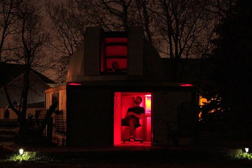

It may sound a little hyperbolic, maybe a little cliché, but stargazing on a nice dark clear night is almost like being in another realm. It’s a very specific experience. It’s a totally different mindset. Let me explain...
When you step outside on a cool autumn evening and glance up at the night sky and see all those brilliant points of light, something special clicks in your mind. It’s hard to put your finger on it but you know something is different. You’re stepping out of the everyday hustle and bustle of the modern world. Our days are filled with activity, beeping technology and deadlines, sterile florescence, and the constant need to be somewhere or to be doing something. When you cross that threshold from your backdoor to the inky blackness of night, all of those modern ‘conveniences’ disappear and you step back in time to a more simple being. You’re transported to a time when our ancestors would gather around campfires and tell stories of ancient gods looking down on us from those very stars. You realize that those shimmering diamonds are not just a backdrop to our provincial world, but a portal to the infinite! It is a portal to an infinite amount of exotic places set to an infinite amount of time.
The night sky is, very literally, a time machine. When ancient explorers used Polaris, the North Star, to guide their ships to the unknown reaches of our own heavenly home, they were not staring at the star ‘now,’ they were staring at the star as it was 400 years before then. Light takes time to travel and everything in the night sky is unimaginably far away. By the time the light reaches us, it’s hundreds, thousands, even millions of years old! By simply looking up as you stroll through your dew-laced lawn, you are truly looking into the past.

You stop.
You listen.
Silence.
Darkness.
No more deadlines. No more email notifications. No more worries. No more. Only infinity.
Time moves more slowly on these nights. It creeps by like the crickets in the grass. You’re on Nature’s time now. As much as we love modern technology and consider it ‘essential,’ there’s something about the allure of Nature we cannot escape. The natural Earth. The natural Sky. The comfort of the dark, the amazement of the known, the excitement of the mysterious.
As you press your eye to the familiar cushion of the eyepiece, the unparalleled dynamic of the black sky and the brilliant sapphire stars reminds you of what true beauty looks like. Perfect sapphires, rubies, and diamonds sprinkled across the heavens. The eyepiece is small, almost the size of a peephole. You feel a tinge of guilt looking through a peephole at something so remarkably beautiful. You almost feel like you’re doing something wrong. But you realize Nature isn’t modest. Even though we may not notice Her on a daily basis, She’s always there flaunting her beauty like a Hollywood starlet in her prime – forever and always.
Infinite romance is only a sky away. On the next clear night, look up and have an affair. Stop and pay attention. We spend so much time looking down that we forget that the sky makes up half of our visual world. The sky is huge! Look up and let Her embrace you. Look closely and you just might fall in love just as generations of peasants and kings before you; sailors lying on their decks, astronomer priests behind stained-glass, warriors and sheepherders in their fields… If you give the night sky the chance, you may lose your heart to infinity.